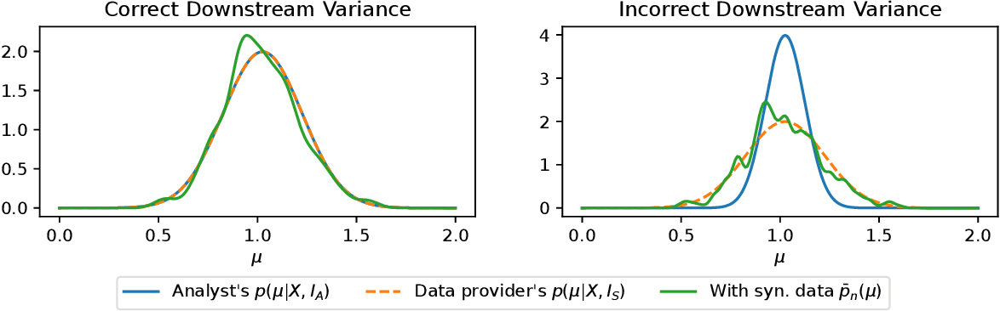

🧠 Consistent Bayesian Inference from Synthetic Data
This post summarizes the JMLR paper “On Consistent Bayesian Inference from Synthetic Data” by Ossi Räisä, Joonas Jälkö, and Antti Honkela. The paper addresses how to perform valid Bayesian inference when only synthetic data is available, a critical concern for privacy-preserving machine learning and data analysis.
📌 Key Contributions
- Methodology: The authors propose generating multiple large synthetic datasets from a posterior predictive distribution. By performing Bayesian inference on each dataset and combining the results, they aim to approximate the true posterior.
- Theoretical Guarantees: When the analyst's and data provider's models are congenial and synthetic datasets are sufficiently large, the posterior converges to the true distribution as more datasets are combined.
- Practical Use: This framework allows analysts to apply familiar Bayesian inference tools without modifying their pipelines.
🧪 Experimental Validation
The authors validate their method with two scenarios:
- Gaussian Mean Estimation: The method accurately recovers the posterior under known conditions.
- Differentially Private Bayesian Logistic Regression: Even with DP noise, the approach performs reliably when models are well-matched and datasets are large.

⚠️ Limitations
- Model Compatibility: Results depend on the compatibility (congeniality) of the analyst’s model with the data provider’s generation process.
- Synthetic Data Size: Synthetic datasets must be large—often larger than the original dataset—for convergence guarantees to hold.
🔗 Further Reading
This research provides a vital path toward usable, theoretically grounded Bayesian inference in settings where only synthetic data is available, especially relevant to differentially private systems.